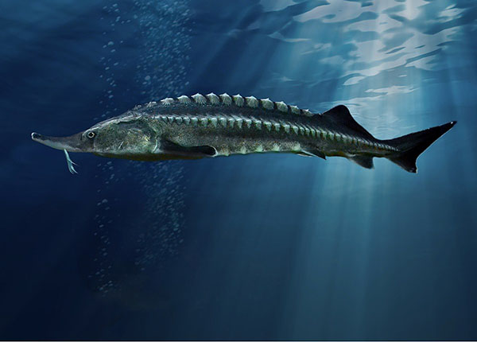

 Many kinds of fish live in the salty water of the oceans. A fish's kidney keeps the proper balance of salt in its body. Popular saltwater fish are bluefish, cod, flounder, striped bass (also found in freshwater), sea trout, tarpon, tuna, halibut, rockfish, sea perch, lingcod, and yellowtail.
The most beautiful fish in the world are the Clownfish, Picasso Triggerfish, Lionfish, French Angelfish, Regal Tang, and Mandarinfish. All these fish have bright and beautiful colors.
Fish mostly eat zooplankton, other fish, algae, sponges, fish eggs and larvae, jellyfish, worms, crustacean and yes, floating insects, but not insects we get used to on the surface. One of the most dangerous type of fish is The Great White Shark.